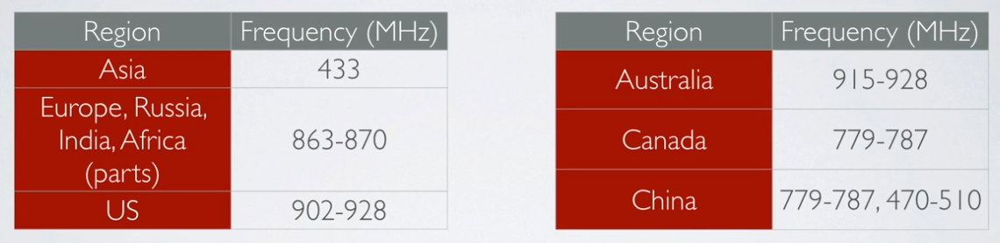

LoRa¶
Source : https://youtu.be/cUhAyyzlv2o
Range vs Power¶
LPWAN stands for Low Power Wide Area Network and this type of wireless communication is designed for sending small data packages over long distances, operating on a battery
| Technology | Wireless Communication | Range | Tx Power |
|---|---|---|---|
| Bluetooth | Short range | 10 m | 2.5 mW |
| Wifi | Short range | 50 m | 80 mW |
| 3G/4G | Cellular | 5 km | 5000 mW |
| LoRa | LPWAN |
|
20 mW |
LoRa modulation / radio part -> closed sources
Data rates¶
Between 0.3 kbps to 5.5 kbps.
LoRa networks¶
- Gateways can handle 100s of devices at the same time.
- The gateways can listen to multiple frequencies simultaneously, in every spreading factor at each frequency.
- Communications are bidirectional
- uplink : end node -> gateways
- downlink : gateway -> end node
- The LoRaWAN protocol does not support direct communication between end nodes. If you want direct communication between LoRa devices without the use of gateways, use the RadioHead Packet Radio library for embedded microprocessors. It provides a complete object-oriented library for sending and receiving packet sized messages via a variety of radios such as LoRa on a range of embedded microprocessors: https://www.airspayce.com/mikem/arduino/RadioHead

Rules and regulations¶
General considerations¶
LoRa operates in the unlicensed ISM (Industrial, Scientific and Medical) radio band that are available worldwide.
A more detailed list of LoRa frequencies used per country can be found at:
https://www.thethingsnetwork.org/docs/lorawan/frequencies-by-country.html
https://www.thethingsnetwork.org/docs/lorawan/frequency-plans.html
https://www.ntia.doc.gov/files/ntia/publications/2003-allochrt.pdf
In Europe the European Telecommunications Standards Institute (ETSI) creates standards which are used by local (= country) regulatory authorities.
In the US the Federal Communications Commission (FCC) creates these standards.
ISM band advantages:
- Anyone is allowed to use these frequencies.
- No license fee is required.
ISM band disadvantages:
- Low data rate.
- Lots of interference because anyone can use these frequencies.
In Europe¶
For example in Europe when using the ISM band frequencies (863 MHz - 870 MHz) users must comply to the following rules:
- For uplink, the maximum transmission power is limited to 25mW (14 dBm).
- For downlink (for 869.525MHz), the maximum transmission power is limited to 0.5W (27 dBm)
- There is an 0.1% and 1.0% duty cycle per day depending on the channel.
- Maximum allowed antenna gain +2.15 dBi.
Besides these ISM band rules, the network operator (for example The Things Network) can also add additional restrictions.
The Things Network restrictions¶
If you use The Things Network (free public community LoRaWAN network), the following fair use policy applies:
- The uplink airtime is limited to 30 seconds per day (24 hours) per node.
- The downlink messages are limited to 10 messages per day (24 hours) per node.
More information about the TTN fair use policy: https://www.thethingsnetwork.org/docs/lorawan/duty-cycle.html
Duty cycle / time on air (ToA)¶
When a signal is send from a sender it takes a certain amount of time before a receiver receives this signal. This time is called Time on Air (ToA).
Duty cycle is the proportion of time during which a component, device, or system is operated. The duty cycle can be expressed as a ratio or as a percentage. As mentioned previously in Europe there is a 0.1% and 1.0% duty cycle per day depending on the channel.
To respect the 1% duty cycle :
For example : ToA = 530ms => affer sending a message, we have to wait 99x530ms = 52.47s before sending a new message.
LoRaWAN Device Classes¶
The LoRaWAN specification defines three device classes:
- A(ll) Battery powered devices. Each device uplink to the gateway and is followed by two short downlink receive windows.
- B(eacon) Same as class A but these devices also opens extra receive windows at scheduled times.
- C(ontinuous) Same as A but these devices are continuously listening. Hence these devices uses more power and are often mains powered.
Class A¶
At any time an end node can broadcast a signal. After this uplink transmission (tx) the end node will listen for a response from the gateway.
The end node opens two receive slots at t1 and t2 seconds after an uplink transmission. The gateway can respond within the first receive slot or the second receive slot, but not both. Class B and C devices must also support class A functionality.

Note : “All” means the class A mode is supported by all classes.


dBm, dBi, dBd¶
- dBm : reference is 1mW
- dBi : refers to the antenna gain with respect to an isotropic antenna
- dBd : dBd refers to the antenna gain with respect to a reference dipole antenna
dBi = dBd + 2.15
Free space losses¶
L(fs) = 32.45 + 20log(D) + 20log(f)
- Lfs = Free space loss in dB
- D = Distance between end node and gateway in km
- f = frequency in MHz
For example: f=868MHz
- D=0.01 km, Lfs = 32.45 + 20log(0.01) + 20log(868) = 51 dB
- D=0.05 km, Lfs = 32.45 + 20log(0.05) + 20log(868) = 65 dB
- D=0.10 km, Lfs = 32.45 + 20log(0.10) + 20log(868) = 71 dB
- D=0.50 km, Lfs = 32.45 + 20log(0.50) + 20log(868) = 85 dB
- D=1.00 km, Lfs = 32.45 + 20log(1.00) + 20log(868) = 91 dB
Fresnel zone¶
The Fresnel zone is an elliptical shaped body around the direct line of sight path between the end node and the gateway.
Any obstacle within this volume, for example buildings, trees, hilltops or ground can weaken the transmitted signal even if there is a direct line of sight between the end node and the gateway.
=> avoid objects within the Fresnel zone
Earth curvature influence :
As a rule of thumb Fresnel zone should always be clear of obstruction but this can be impractical so it is said that beyond 40% blockage, signal loss will become significant.

Example :
- f = 868 MHz
- H : earth curvature allowance
- r+H : minimum end node and gateway height above ground
- For the best radio signal performance: The gateway antenna must be placed outdoors at a high location (avoiding obstacles in the Fresnel zone).
- The antenna design for both gateway and end nodes must be optimised for its regional frequency.
- Keep the antenna polarisation vertical for both gateway and end nodes and use omnidirectional antenna to cover a large area.
Link Budget¶
A link budget is the sum of all of the gains and losses from the transmitter, through the medium (aka free space), to the receiver in a telecommunication system. It is a way of quantifying the link performance.
The receiver sensitivity is the lowest power level at which receiver can receive or demodulate the signal.
EIRP and ERP¶
The Effective Isotropic Radiated Power (EIRP) is the total power radiated by a hypothetical isotropic antenna in a single direction.
The Effective Radiated Power (ERP) is the total power radiated by an actual antenna relative to a half-wave dipole rather than a theoretical isotropic antenna.
EIRP = Tx power (dBm) + antenna gain (dBi) - cable loss (dBm)
For example: EIRP = 20 + 10 - 5 = 25 dBm
ERP = Tx power (dBm) + antenna gain (dBd) - cable loss (dBm)
For example: ERP = 20 + 7.85 - 5 = 22.85 dBm
Relationship EIRP and ERP: EIRP (dBm) = ERP (dBm) + 2.15
What is the purpose of ERP and EIRP?
RF transmitting systems must adhere to certain rules set by the regulatory bodies such as FCC or ETSI.
One of these rules: radio devices must not exceed certain ERP or EIRP values set by these regulatory bodies.
RSSI¶
The Received Signal Strength Indication (RSSI) is the received signal power in milliwatts and is measured in dBm.
This value can be used as a measurement of how well a receiver can “hear” a signal from a sender.
The RSSI is measured in dBm and is a negative value.
The closer to 0 the better the signal is.
Typical LoRa RSSI values are:
RSSI minimum = -120 dBm.
- If RSSI=-30dBm: signal is strong.
- If RSSI=-120dBm: signal is weak.
SNR¶
Signal-to-Noise Ratio (SNR) is the ratio between the received power signal and the noise floor power level.
The noise floor is an area of all unwanted interfering signal sources which can corrupt the transmitted signal and therefore re-transmissions will occur.
- If SNR is greater than 0, the received signal operates above the noise floor.
- If SNR is smaller than 0, the received signal operates below the noise floor.
Normally the noise floor is the physical limit of sensitivity, however LoRa works below the noise level.
Typical LoRa SNR values are between: -20dB and +10dB
A value closer to +10dB means the received signal is less corrupted.
LoRa can demodulate signals which are -7.5 dB to -20 dB below the noise floor.